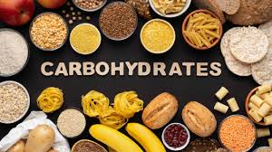
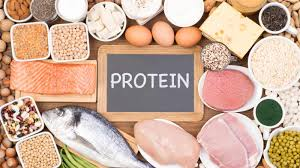
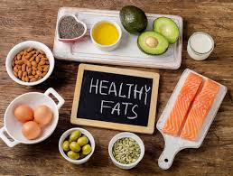

Welcome to Nutri C
Your source for nutritional advice and healthy living tips.
Types of Nutrition

Carbohydrates
Essential for energy. Found in grains, fruits, and vegetables.

Proteins
Important for building and repairing tissues. Sources include meat, beans, and dairy.

Fats
Necessary for hormone production and nutrient absorption. Found in oils, nuts, and avocados.
Why Nutrition is Necessary
Proper nutrition is vital for overall health. It helps:
Boost the Immune System
A well-balanced diet strengthens your body's defenses against illness.
Maintain a Healthy Weight
Good nutrition helps regulate your body weight and reduces obesity risk.
Support Brain Function
Nutrients are essential for cognitive function and mental health.
Improve Energy Levels
Proper nutrition fuels your body, enhancing your stamina and energy.
Reduce Risk of Chronic Diseases
Healthy eating lowers the risk of heart disease, diabetes, and other illnesses.
Nutritional Content Levels
| Nutrient | Low | Medium | High |
|---|---|---|---|
| Fats | up to 3 g | 3 - 17.5 g | above 17.5 g |
| Saturated Fats | up to 1.5 g | 1.5 - 5 g | above 5 g |
| Carbohydrates | up to 5 g | 5 - 20 g | above 20 g |
| Sugars | up to 5 g | 5 - 22.5 g | above 22.5 g |
| Proteins | up to 5 g | 5 - 20 g | above 20 g |